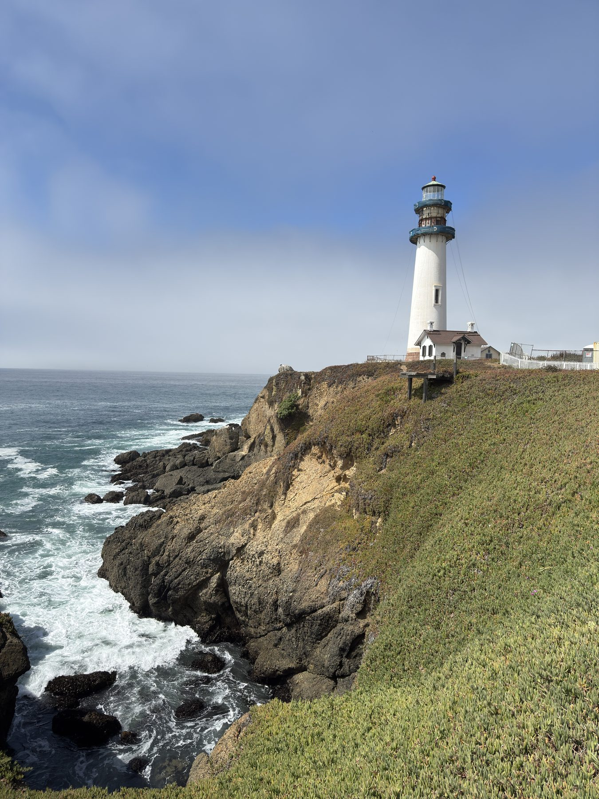
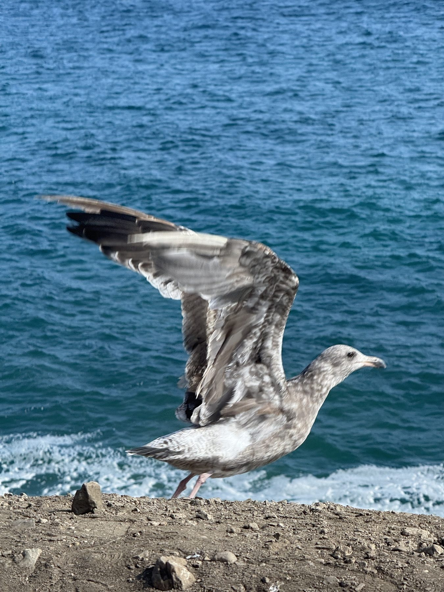
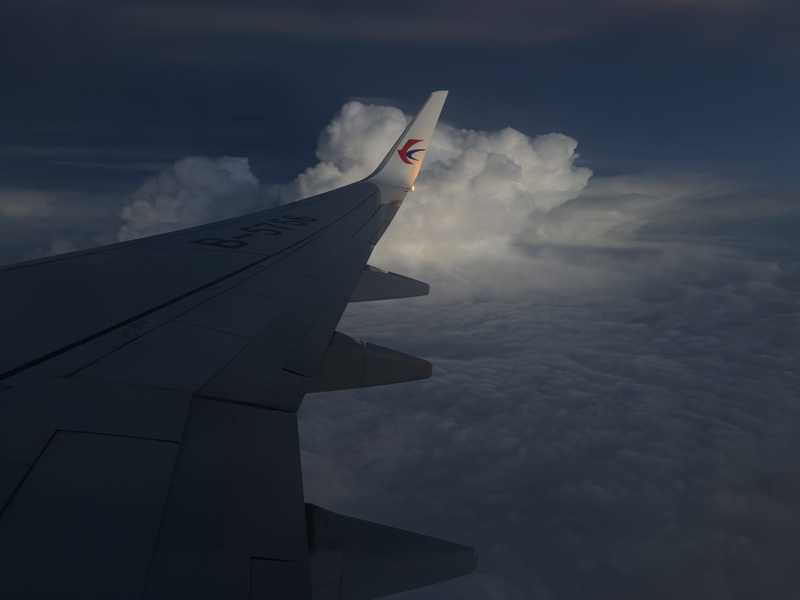
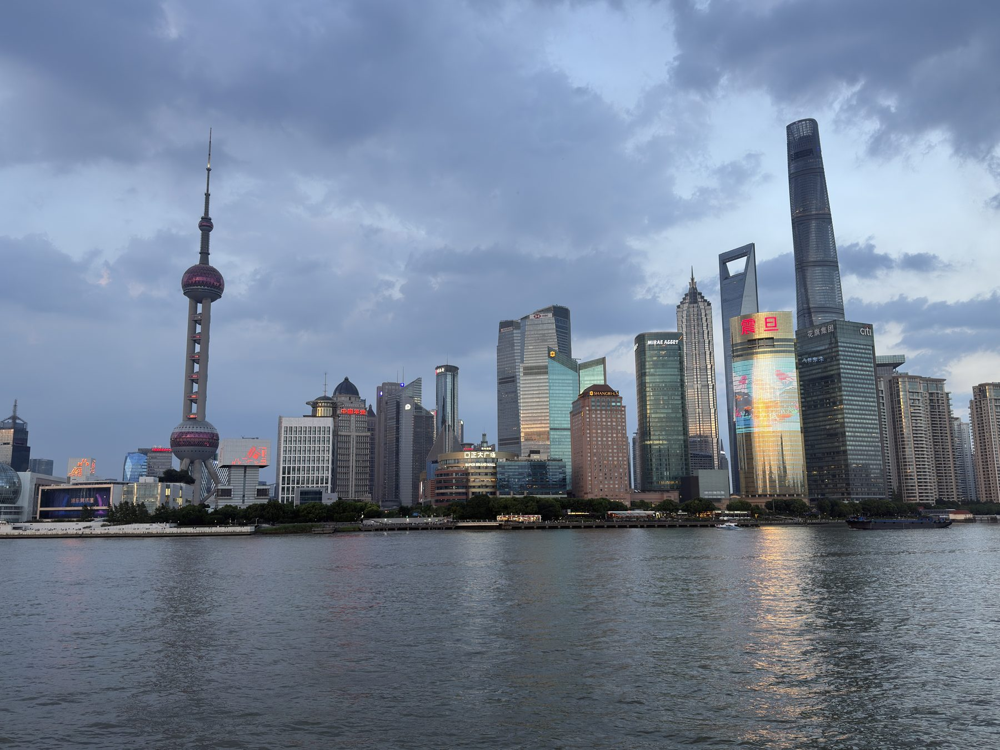

Featured
Life &
travel.
Not research — just life. Coastlines, cities, and small moments collected along the way. Another side of me.
All 46 featured photographs shot on iPhone 16 Pro by Ares.

8 photographs
Pacific Edge
Warm currents and gentle waves tap the shoreline, patient as time itself. Beach, stones, and sky compose nature’s grand formation — a masterpiece no human hand could ever make. Stand at the edge long enough, and the Pacific starts to feel less like a place and more like a pulse.

14 photographs
Wild & Blooming
Plants and animals are fellow citizens of Mother Earth. They make life vivid and dynamic — small sparks of fun and wonder in our everyday. A seagull mid-takeoff, a squirrel mid-thought, a lotus opening at dawn: none of them perform, and all of them mesmerize.

9 photographs
Above the Clouds
Flying has been humanity’s dream for ages. Now iron birds carry us fast and high — and the sky reveals a miraculous world, utterly different from the land, calling us back up again and again. Above the clouds, the world goes quiet, and everything ordinary looks brand new.

15 photographs
Streets & Skylines
Industrialization and modernization quicken the pace of life — yet home and dreams stay the same, a light guiding people back home and onward toward the future. Steel, glass, and lamplight: the city is humanity’s boldest sketch of itself, redrawn every single night.